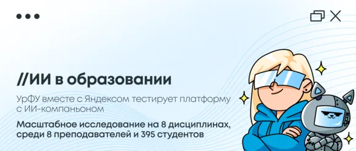
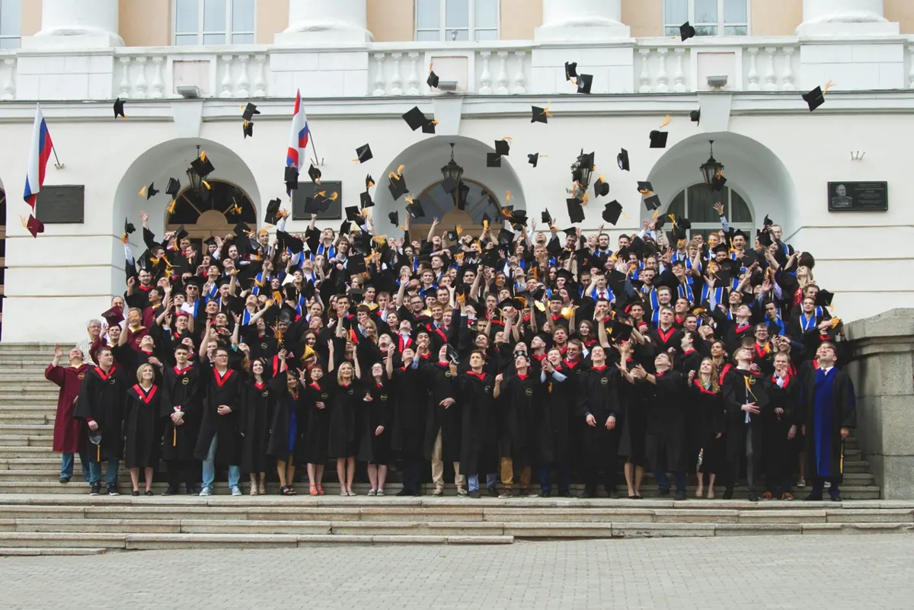
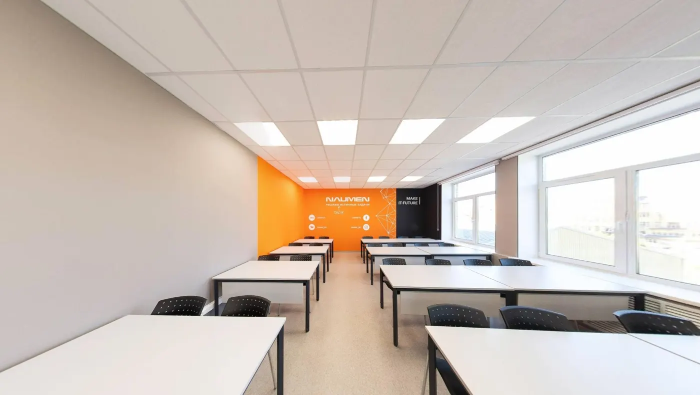
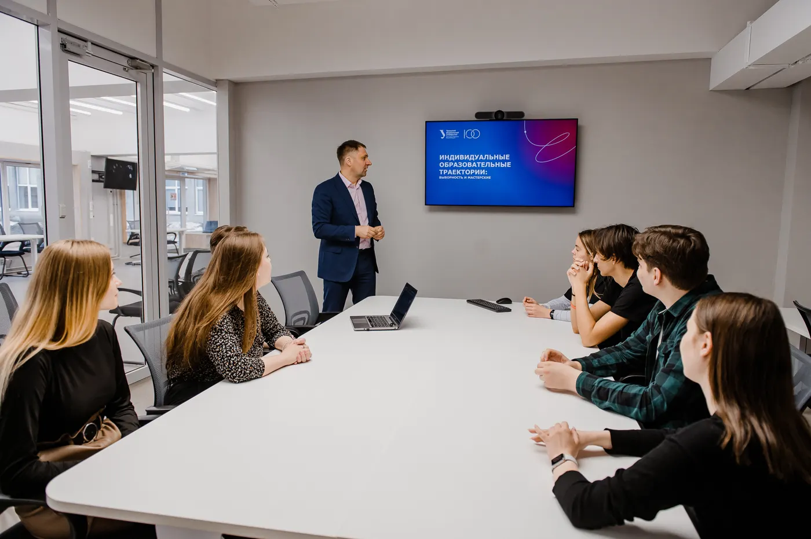
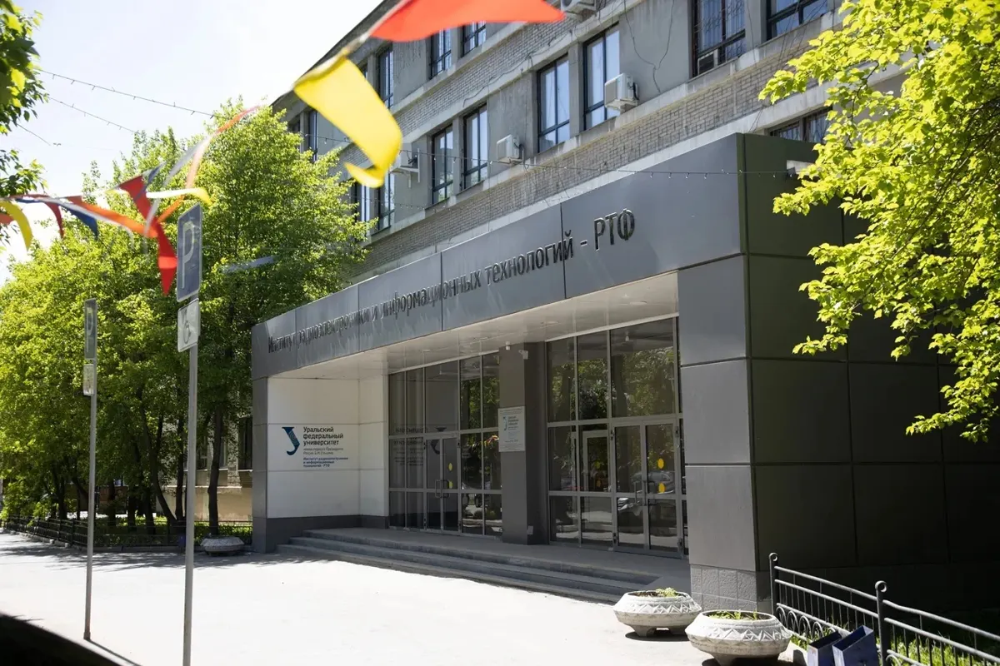

УрФУ внедряет новую модель обучения с искусственным интеллектом вместе с Яндексом
УрФУ присоединился к тестированию платформы с ИИ-компаньоном для университетов, которую разработал Яндекс.
ЧитатьНайдите себя.
Выберите своё дело.
Начните здесь.

Фото: официальный сайт ИРИТ-РТФ, УрФУ
А ВНУТРИ — ВОЗМОЖНОСТИ.Самые нужные вещи — сразу перед вами.
Не нужно знать, какой отдел за них отвечает.
Предметы, места и стоимость — рядом.
Ваша группа. Ваша неделя. Без лишнего.
Из кода в расписании — в нужный корпус.
Заселение, документы и полезный чек-лист.
Пошаговый маршрут от выбора до зачисления.
Контакты людей, которые помогут.
Начните с суммы ЕГЭ. Посмотрим, какие программы стоит изучить, и честно расскажем, чего мы пока не знаем.
Минимальный и проходной — в чём разница? ↗Необязательно видеть весь путь.
Достаточно сделать следующий шаг.
Что увлекает? С каких интересов начинается ваша профессия?
02Сравните содержание, экзамены и условия обучения.
03Документы, правила и ваш следующий шаг.
04Что взять с собой и как подготовиться к переезду.
Наука начинается с любопытства. Найдите свою команду, лабораторию и задачу, которую хочется решить.
Найти себя в науке
Фото: ИРИТ-РТФ · rtf.urfu.ru
УрФУ присоединился к тестированию платформы с ИИ-компаньоном для университетов, которую разработал Яндекс.
ЧитатьВ рамках ознакомительной практики в ИРИТ-РТФ был проведен курс «Цифровой контроль деталей: интенсив для инженеров будущего» для студентов технических направлений.
Читать3 июля у абитуриентов будет возможность лично пообщаться с представителями институтов УрФУ и индустриальными партнёрами на встрече, посвящённой математике и информационным технологиям.
Читать
Фото: ИРИТ-РТФ · rtf.urfu.ruСпорт, творчество, волонтёрство или свой проект. Университет — гораздо больше, чем расписание.
Жить на полную